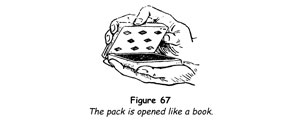
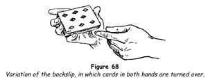
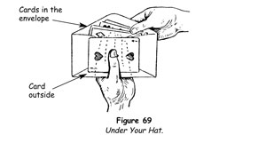
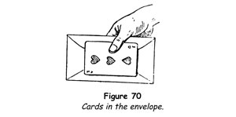

The backslip is an easy and useful sleight in which the pack is cut and in the action the top card is slipped secretly to the top of the lower portion.
1. Hold the pack face downwards in the left hand, the thumb extending along one side, the index finger at the outer end, the other fingers at the other side.
2. Grasp the upper half of the pack at the ends with the right fingers and thumb, and open like a book (figure 67).

3. Press against the top card with the tips of the left middle, ring and little fingers.
4. Lift upwards all the cards held by the right hand except the top card. Fold this card down on top of the lower portion with the left fingers.
Smoothly performed, the slipping of the card cannot be seen, but care must be taken to make the fall of the card noiseless.
This is the basic sleight. Nate Leipzig, the late, great American card conjuror, devised the following procedure to hide the transfer of the card. In making the action in step 4, turn both hands at the same time so that the cards they hold are face upwards. Point to the face card of the packet in the right hand with your extended left index finger and make some appropriate remark about this card (figure 68).

Backslip Force
Let us say that you have a card at the top of the pack that you wish to force. Riffle downwards with the thumb at the left side of the pack and ask someone to stop you whenever he likes. Stop the riffle at this point and remove the cards above the thumb with the right hand, backslipping the top card on to the lower portion. Extend the left hand and have this card removed.
This is an easy and deceptive force used by many performers.
Backslip Control
1. Grasp the pack in readiness for the backslip and open the pack bookwise with the right hand as you request that a chosen card be replaced.
2. When it is placed on the lower portion, move the right hand with the upper portion outwards in a gesture, at the same moment backslipping the top card on to the lower portion above the chosen card.
3. Say, 'Let's be sure that your card is lost in the pack,' and with the left thumb push off the top card - which everyone believes to be the chosen one - and thrust it flush into the centre of the packet held in the right hand.
4. Hand this right-hand packet to the spectator to shuffle while you shuffle the remainder, sending the top card, the chosen card, to the bottom and back to the top.
5. Reassemble the pack by placing the spectator's packet below yours. The chosen card, apparently completely lost, is now the top card of the pack.
TRICKS WITH THE BACKSLIP
Lightning Card
There are few tricks from which so much entertainment can be got as the trick about to be described. A spectator sees his chosen card from among a number he holds and a moment later it vanishes only to reappear elsewhere!
1. Take a shuffled pack and ask someone to think of a small number, larger than five, but less than fifteen. 'A long trick is a dull trick,' you explain. 'We'll keep this one brief.'
2. Holding the pack upright and facing the spectator, thumb cards from the left hand into the right without reversing their order, counting them aloud. Have the spectator remember the card which falls on his number. Count to fifteen and replace these cards on the pack.
3. Cut away the top half of the pack with the right hand, and in doing this backslip the top card on to the lower portion, which you place at your right.
4. Riffle the upper portion and ask the spectator if he sees his card. He says that he does but, unknown to him it is now one card higher in the packet than he thinks it is.
5. Hand him this packet. 'Your card is among those you now hold?' you ask.
'Yes.'
'If you're not absolutely sure of that, look again.'
'No, I know it's there.'
'Very well. Now, what was the number of which you thought? Not the card, just the number.'
'Nine.'
'Better and better,' you exclaim. 'You couldn't have thought of a more fortuitous number!'
6. 'You have your packet of cards with your card among the others,' you say. Tap your packet of cards on the table at your right. 'I have my packet over here.' Pick up the top card of your packet. 'I'll count to your number in my packet, you count to it in yours.' Place the card face downwards in your left hand, counting 'one'.
Extend your left hand and have him place the top card of his packet on top of your card. Remove the next card from your packet, placing it on those in the left hand, counting 'two', and similarly have him place a second card in your left hand, all the cards being face downward.
7. Continue to do this until you reach the number that is one less than the number he named, which in the illustration we have cited would be eight. The last card he places in your left hand will be his chosen card, although he believes that it is the top card of those he still holds. You say, 'The next card, the ninth card, is your card. Kindly place it face downwards on the table.' When he does this, no matter how he places it, have him turn it so that it is at right angles to its original position, as if this were important, which it is not.
8. As everyone's attention is misdirected to the adjustment of the card on the table, place your right hand casually over the cards you hold in your left hand and palm the top card, which is the spectator's card. 'Ah, I think the trick will work,' you exclaim. 'You have placed the card absolutely correctly! What is the name of that card?'
9. He names his card and you say, 'I don't think it is. Will you turn it face upwards?' As he turns the card and all attention is misdirected towards it, move your right hand with the palmed card at a normal speed to the packet at your right, drawing it inwards and adding the palmed card. Rest your fingertips on the centre of the card and continue, 'You see, it isn't your card. You thought you saw your card among those you were holding, but actually it has been at the ninth position in my packet all the time. Look - here is my ninth card!'
Turn the top card of your packet and show that it is his card.
The Tantaliser
In this trick there is an element of sly humour, which should be capitalised upon. A card is selected and returned to the pack. The whole pack is dealt into two piles, one of which you keep. The spectator cannot find his card among those dealt to him, hence you deal your pile into two piles in the same way as before; but still he cannot find his card among those given to him. This continues until what you are doing dawns on him - and, sure enough, when only one card remains this is the chosen card.
1. Glimpse the bottom card of the pack and bring it to the top in the course of an overhand shuffle. Spread the pack and have someone remove a card and show it to everyone; as this is being done, cut the pack, backslipping the top card, your key card, on to the lower portion. Keep your gaze averted from the pack.
2. Have the card replaced upon the lower portion and replace the upper portion. Shuffle the cards, using the key undercut shuffle, which will not separate the key card from the chosen card; then have someone make as many complete cuts as may be desired.
3. Take the pack and run through the cards as though searching for the card. Find your key card: the card above it is the spectator's card. Counting his card as one, count twenty-two cards to the left and cut any cards over twenty-two to the bottom. If there are not enough cards to bring you to twenty-two, continue the count from the bottom and cut the required cards to the top. In either case, the spectator's card is placed twenty-second from the top.
4. 'I'll do this trick a little differently,' you say, and deal the pack into two piles, one for the spectator and one for yourself. In this, and in every subsequent deal, always give him the first card and always deal the cards face downwards.
5. Ask the spectator if he sees his card among those he holds. He will not. Have him discard his cards.
6. Take your pile, which you have dealt neatly to keep the cards in order, and deal two more piles. Ask him if he sees his card in his pile. He will not. Have him discard his pile.
7. Take your pile, deal two more piles and ask if he sees his card, which he will not. Have him discard his cards.
8. Take your pile and deal two more piles. He will not find his card among those he holds.
9. You now have three cards in your hand. Deal two more piles, in which he will receive two of the cards and you will receive one. Ask him if his card is one of the two he holds. It will not be.
10. Glance at him wryly and say quizzically, 'Well?' You now both know that the card face downwards before you is his card, and usually your audience will be amused. Have him name his card, turn over the one before you and show that it is his card.
Under Your Hat
Five cards are sealed in an envelope before one of them is chosen. Although the envelope remains in view at all times, propped against a borrowed hat, the chosen card vanishes from the envelope and is found under the hat.
1. Borrow a pack of cards, a sheet of paper, two felt hats and an envelope. Place the hats, crown downwards, on the table and stand to its left. Tear the paper into five strips and hand them and the cards to a volunteer spectator, instructing him to have five spectators each freely select one card, to give each of these spectators a piece of paper, and then to lay the pack aside.
Ask the spectators to write the names of their cards on the slips of paper. This done, have your assistant collect the five cards and hand them to you.
2. Take the envelope in your left hand and hold it as in figure 69. Apparently slide the five cards into it, but actually allow four only to enter, keeping the face card - which you note (say, the three of hearts) - on the outside under your left thumb (figure 70).


3. Seal the envelope naturally and pass it, with the card concealed behind, to your right hand, dropping them into one of the hats. You must not be hasty or furtive in doing this. There is no reason why anyone should suspect what you are doing.
4. Walk away a few paces, pause and turn back. Remove the envelope from the hat, then turn the hat over and place it, brim downwards, on the table, the card dropping on to the table top where it is concealed by the hat. Saying, 'I'll place the envelope here in this makeshift easel,' stand it upright in the crease of the hat, which you deepen to accommodate it.
5. Instruct your assistant to take the other hat and collect the written slips after they have been folded or crumpled. Next invite him to reach into the hat and mix them thoroughly, pick one at random and hand it to you. Casually open it and, regardless of what is written on it, ask, 'Will the gentleman who wrote the three of hearts [or whatever your glimpsed card may be] step up and take the envelope?' Do not add to or change the wording in any way.
Without showing the slip to the spectator (unless by chance it bears the name of the card you glimpsed), direct him to take the envelope and open it. As he does this, unhurriedly and absently put the slip in your pocket, concentrating all your attention on the spectator.
6. Ask him to take the five cards from the envelope and call their names. He finds only four cards - the three of hearts is missing.
7. You look at him, smiling, then turn to the audience and say, 'The card has vanished!' Turn back to the spectator, saying, 'Perhaps it's under the hat.' He lifts the hat and finds the missing card!
By the law of averages, once in five times the name of the glimpsed card and the name written on the slip will coincide. When this happens, hand the slip to the spectator when he comes forwards, saying, 'That is your handwriting?' and when he confirms this, continue with the trick. The feat is strengthened immeasurably when this occurs.